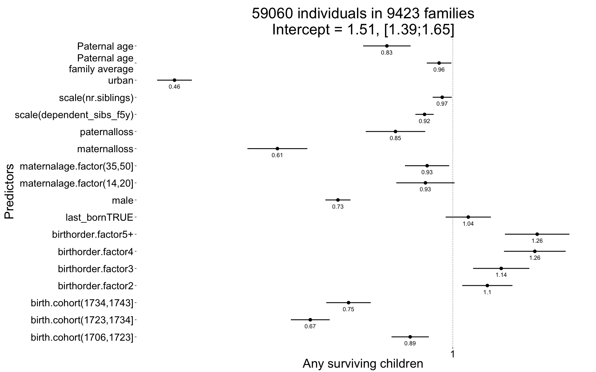
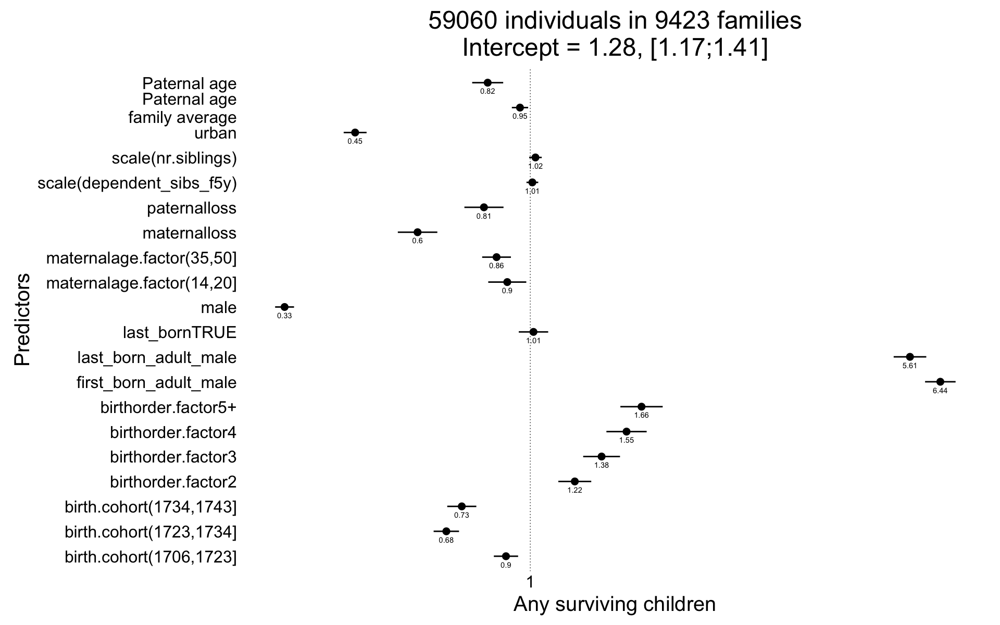
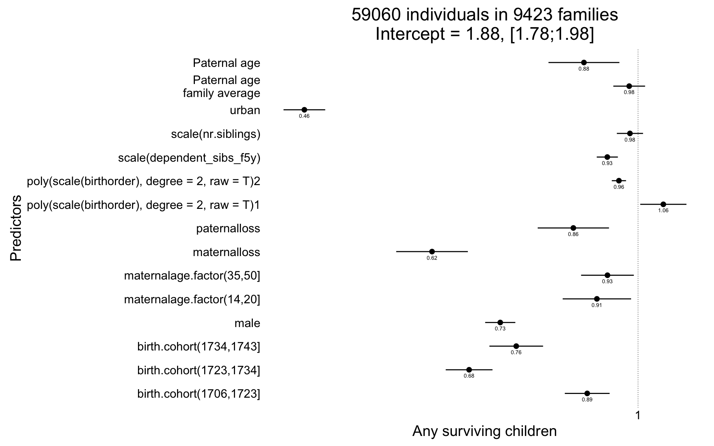
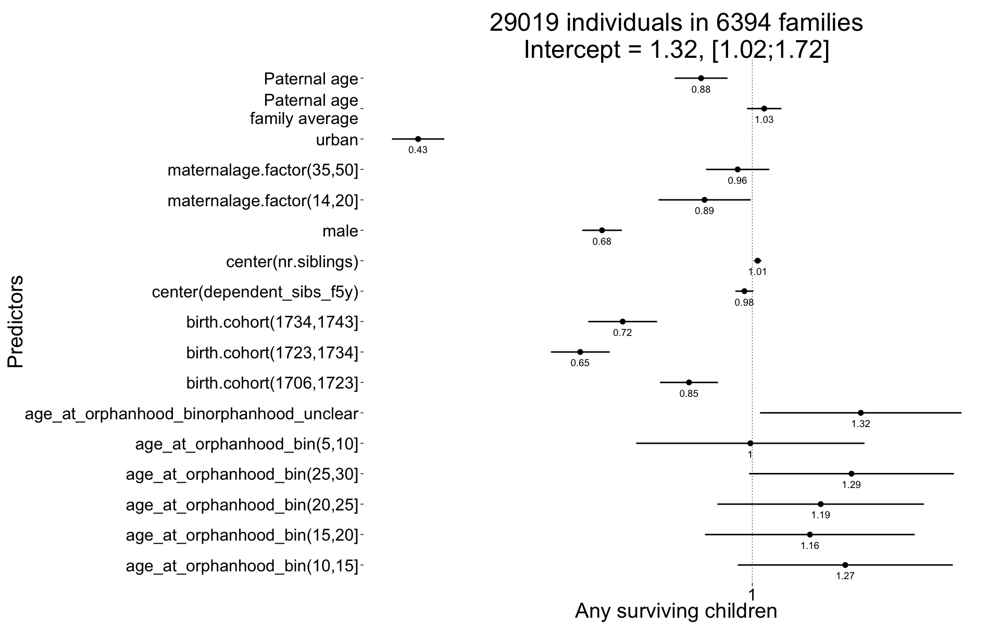
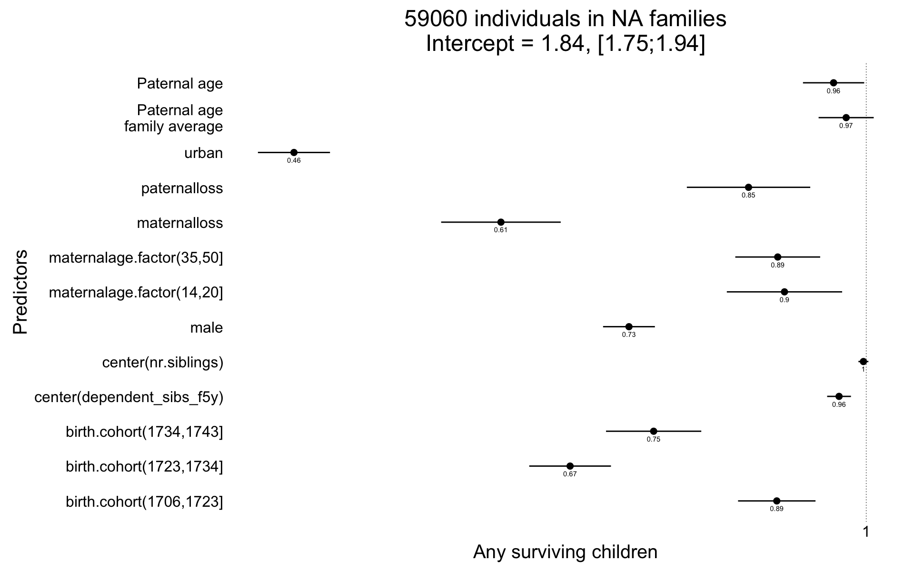
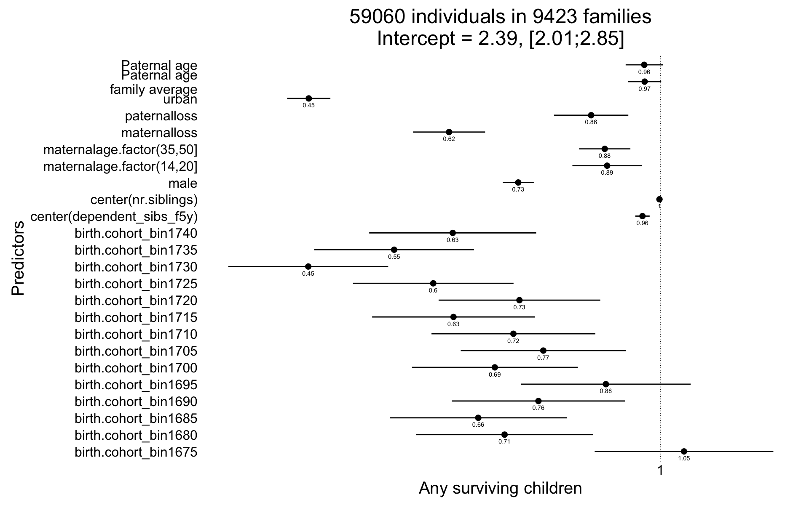
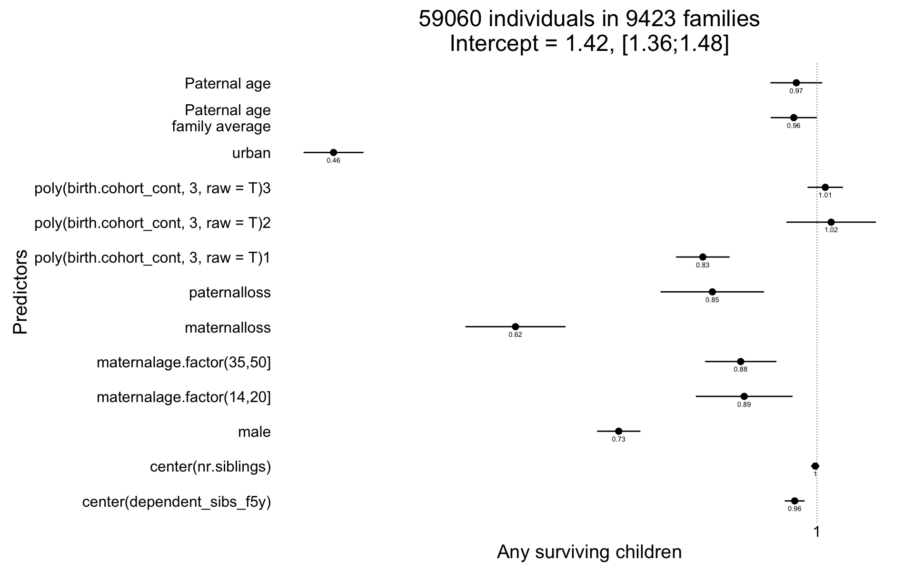
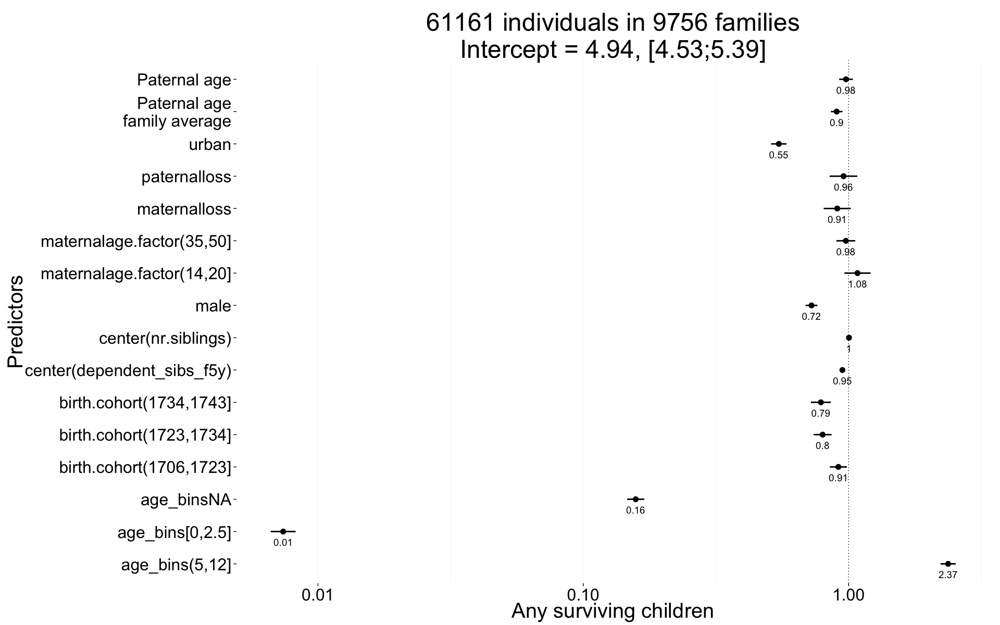
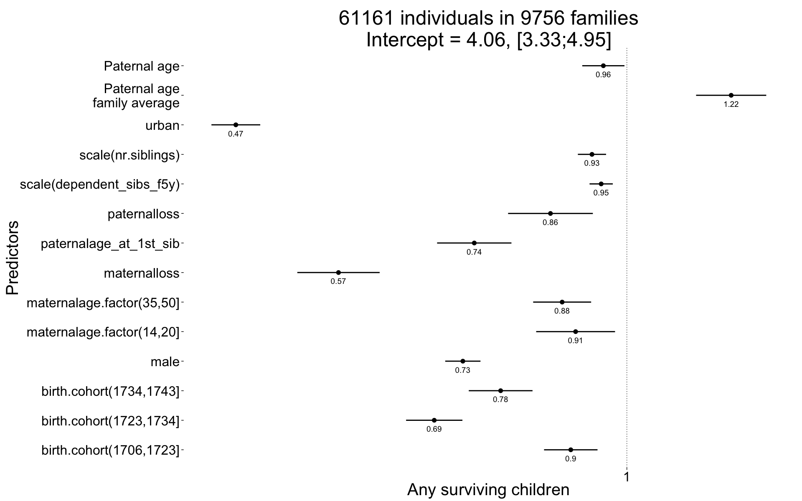

library(data.table); library(ggplot2); library(knitr); library(lme4); library(QuantPsyc)
opts_chunk$set(warning=TRUE, cache=TRUE,tidy=FALSE,autodep=TRUE,dev=c('png','pdf'),fig.width=20,fig.height=12.5,out.width='1440px',out.height='900px',cache.extra=file.info('rpqa.rdata')[, 'mtime']);
opts_knit$set(self.contained = F)
source("0__helpers.R")
load("rpqa.rdata")The rpqa.1 dataset contains only those participants where paternal age is known and the birthdate is between 1670 and 1750.
All of the following models have the following in common:
Bobyqa is fairly robust to convergence failures. In addition to using Bobyqa, we center some variables that otherwise lead to large eigenvalues.
control_defaults = glmerControl(optimizer = "bobyqa")As in our main models, we control for birth.cohort (birth years in five equally large bins), male sex. Additionally, we control for paternal and maternal loss (whether either parent died within 5 years of the birth), for maternal age (bins of 14-20, 20-35 and 35-50), the total number of siblings (constant for all siblings) and the number of siblings who where alive and dependent during the first 5 years of the child (defined as being alive simultaenously, less than 10 years old, and not dying in the first year).
We added random intercepts for each family (father-mother dyad). We then controlled for the average paternal age in the family. Hence, the paternal age effects in the plot are split into those between families and those within families or between siblings. The relevant effect for our hypothesized mechanism, de novo mutations, is paternal age between siblings.
Here, episodes of selection refers to survival, mating success, reproductive success. To steer clear of sacrificial pseudo-replication, we make sure that each effect cannot be explained by the episode of selection preceding it. At its simplest, we check for effect on survival to reproduction only among those who lived to their first birthday. In later models, we look for an effect on number of children only among those who married and control their number of spouses.
In our main analyses, we chose to control for the number of other siblings who were very dependent (i.e. younger than 5) in the first 5 years of life. We think this maps more closely to our intention to control social competition among siblings. Other researchers have decided to control for birth order (or the number of older siblings). In the case of multiple births, it is ill-defined because exact birth order is often not known and does not matter as much (but especially a fraternal co-twin can be seen as just as much a competitor as a regular sibling, which is picked up by our chosen control variable). To show that our results hold up when this perhaps more standard, but arguably flawed variable is controlled instead, we offer the following two analyses.
rpqa.1[, birthorder.factor := factor(ifelse(birthorder>4,"5+", birthorder))]
rpqa.1[, last_born := birthorder==nr.siblings]
Any_surviving_children <- glmer(
any_surviving_children ~ birthorder.factor + last_born + urban + scale(dependent_sibs_f5y) + maternalage.factor + paternalloss + maternalloss + scale(nr.siblings) + birth.cohort + male +paternalage.mean + paternalage.diff + (1|idParents),
data= rpqa.1, subset = byear < 1740,
family = 'binomial', control = control_defaults )
summary(Any_surviving_children)## Generalized linear mixed model fit by maximum likelihood (Laplace
## Approximation) [glmerMod]
## Family: binomial ( logit )
## Formula: any_surviving_children ~ birthorder.factor + last_born + urban +
## scale(dependent_sibs_f5y) + maternalage.factor + paternalloss +
## maternalloss + scale(nr.siblings) + birth.cohort + male +
## paternalage.mean + paternalage.diff + (1 | idParents)
## Data: rpqa.1
## Control: control_defaults
## Subset: byear < 1740
##
## AIC BIC logLik deviance df.resid
## 78946 79126 -39453 78906 59040
##
## Scaled residuals:
## Min 1Q Median 3Q Max
## -1.954 -0.918 -0.416 0.883 2.610
##
## Random effects:
## Groups Name Variance Std.Dev.
## idParents (Intercept) 0.286 0.535
## Number of obs: 59060, groups: idParents, 9423
##
## Fixed effects:
## Estimate Std. Error z value Pr(>|z|)
## (Intercept) 0.4135 0.0438 9.44 < 2e-16 ***
## birthorder.factor2 0.0959 0.0355 2.70 0.00693 **
## birthorder.factor3 0.1343 0.0398 3.38 0.00073 ***
## birthorder.factor4 0.2275 0.0436 5.22 0.0000001805 ***
## birthorder.factor5+ 0.2340 0.0456 5.13 0.0000002930 ***
## last_bornTRUE 0.0429 0.0320 1.34 0.17932
## urban -0.7715 0.0246 -31.38 < 2e-16 ***
## scale(dependent_sibs_f5y) -0.0783 0.0130 -6.04 0.0000000015 ***
## maternalage.factor(14,20] -0.0758 0.0412 -1.84 0.06624 .
## maternalage.factor(35,50] -0.0711 0.0313 -2.27 0.02312 *
## paternalloss -0.1588 0.0421 -3.77 0.00016 ***
## maternalloss -0.4862 0.0424 -11.47 < 2e-16 ***
## scale(nr.siblings) -0.0293 0.0135 -2.17 0.02997 *
## birth.cohort(1706,1723] -0.1181 0.0264 -4.48 0.0000075701 ***
## birth.cohort(1723,1734] -0.3950 0.0274 -14.39 < 2e-16 ***
## birth.cohort(1734,1743] -0.2890 0.0315 -9.18 < 2e-16 ***
## male -0.3184 0.0178 -17.93 < 2e-16 ***
## paternalage.mean -0.0379 0.0174 -2.18 0.02962 *
## paternalage.diff -0.1827 0.0335 -5.45 0.0000000505 ***
## ---
## Signif. codes: 0 '***' 0.001 '**' 0.01 '*' 0.05 '.' 0.1 ' ' 1
##
## Correlation of Fixed Effects:
## (Intr) brth.2 brth.3 brth.4 brt.5+ l_TRUE urban s(__5) m.(14,
## brthrdr.fc2 -0.529
## brthrdr.fc3 -0.611 0.539
## brthrdr.fc4 -0.648 0.526 0.602
## brthrdr.f5+ -0.785 0.548 0.659 0.717
## lst_brnTRUE -0.066 -0.003 -0.005 -0.004 0.005
## urban -0.165 -0.008 -0.012 -0.016 -0.008 0.000
## scl(dpn__5) 0.222 -0.178 -0.321 -0.372 -0.366 0.051 0.063
## mtr.(14,20] -0.242 0.168 0.224 0.213 0.187 -0.018 0.003 0.087
## mtr.(35,50] -0.291 0.041 0.078 0.120 0.166 -0.084 0.021 0.139 -0.066
## paternallss -0.087 -0.011 -0.015 -0.009 -0.008 -0.080 -0.006 0.075 -0.038
## maternallss -0.069 -0.021 -0.033 -0.033 -0.035 -0.095 -0.001 0.112 -0.037
## scl(nr.sbl) 0.214 -0.035 -0.055 -0.085 -0.249 0.051 0.011 -0.288 -0.092
## b.(1706,172 -0.349 0.020 0.029 0.027 0.009 0.013 0.057 -0.010 0.087
## b.(1723,173 -0.374 0.014 0.021 0.017 0.002 0.014 0.095 0.025 0.104
## b.(1734,174 -0.309 0.005 0.001 -0.008 -0.031 0.008 0.099 0.018 0.073
## male -0.208 -0.008 -0.007 -0.008 -0.007 -0.001 0.019 0.020 0.005
## paternlg.mn 0.059 -0.058 -0.102 -0.133 -0.231 0.028 -0.028 0.102 0.011
## patrnlg.dff 0.591 -0.147 -0.275 -0.376 -0.645 -0.108 -0.012 0.176 0.137
## m.(35, ptrnll mtrnll scl(.) b.(170 b.(172 b.(173 male
## brthrdr.fc2
## brthrdr.fc3
## brthrdr.fc4
## brthrdr.f5+
## lst_brnTRUE
## urban
## scl(dpn__5)
## mtr.(14,20]
## mtr.(35,50]
## paternallss 0.118
## maternallss 0.126 0.102
## scl(nr.sbl) -0.163 0.142 0.149
## b.(1706,172 -0.045 -0.008 -0.004 -0.034
## b.(1723,173 -0.048 0.007 0.000 -0.058 0.572
## b.(1734,174 -0.064 0.032 0.003 -0.046 0.480 0.550
## male 0.007 0.009 0.008 -0.007 -0.001 0.009 0.008
## paternlg.mn -0.120 0.015 0.095 -0.078 0.056 0.122 0.127 0.004
## patrnlg.dff -0.574 -0.151 -0.121 0.232 0.000 -0.003 0.006 0.002
## ptrnlg.m
## brthrdr.fc2
## brthrdr.fc3
## brthrdr.fc4
## brthrdr.f5+
## lst_brnTRUE
## urban
## scl(dpn__5)
## mtr.(14,20]
## mtr.(35,50]
## paternallss
## maternallss
## scl(nr.sbl)
## b.(1706,172
## b.(1723,173
## b.(1734,174
## male
## paternlg.mn
## patrnlg.dff 0.184Any_surviving_children_coefs = fortify_mine(Any_surviving_children)
plot_fortified_mer(Any_surviving_children_coefs, "Any surviving children")
In this analysis, we attempt to form a dummy variable for “being likely to inherit property”. In actual fact, inheritance, then as now, was a complex system. This analysis is overly conservative, because controlling for a variable that contains “reaching adulthood” means adjusting for part of the outcome (no early mortality). Still, paternal age differences have a negative effect above and beyond this.
setkey(rpqa.1, idParents, bdate)
rpqa.1[, first_born_adult_male := ave(ifelse(male == 1 & surviveR == 1,1,0), idParents, FUN = function(x) {
x[is.na(x)] = 0
y = cumsum(x)
ifelse(y > 0 & y == x,1,0)
})]
rpqa.1[, last_born_adult_male := ave(ifelse(male == 1 & surviveR == 1,1,0), idParents, FUN = function(x) {
x[is.na(x)] = 0
y = max(cumsum(x)) - cumsum(x) + 1
ifelse(y > 0 & y == x,1,0)
})]
# rpqa.1 %>% dplyr::select(idParents, byear, age, first_born_adult, last_born_adult) %>% arrange(idParents,byear) %>% head(100)
Any_surviving_children <- glmer(
any_surviving_children ~ first_born_adult_male + last_born_adult_male + birthorder.factor + last_born + urban + scale(dependent_sibs_f5y) + maternalage.factor + paternalloss + maternalloss + scale(nr.siblings) + birth.cohort + male +paternalage.mean + paternalage.diff + (1|idParents),
data= rpqa.1, subset = byear < 1740,
family = 'binomial', control = control_defaults )
summary(Any_surviving_children)## Generalized linear mixed model fit by maximum likelihood (Laplace Approximation) ['glmerMod']
## Family: binomial ( logit )
## Formula: any_surviving_children ~ first_born_adult_male + last_born_adult_male +
## birthorder.factor + last_born + urban + scale(dependent_sibs_f5y) +
## maternalage.factor + paternalloss + maternalloss + scale(nr.siblings) +
## birth.cohort + male + paternalage.mean + paternalage.diff + (1 | idParents)
## Data: rpqa.1
## Control: control_defaults
## Subset: byear < 1740
##
## AIC BIC logLik deviance df.resid
## 72980 73178 -36468 72936 59038
##
## Scaled residuals:
## Min 1Q Median 3Q Max
## -5.058 -0.778 -0.273 0.795 3.138
##
## Random effects:
## Groups Name Variance Std.Dev.
## idParents (Intercept) 0.356 0.597
## Number of obs: 59060, groups: idParents, 9423
##
## Fixed effects:
## Estimate Std. Error z value Pr(>|z|)
## (Intercept) 0.24983 0.04691 5.3 1.0e-07 ***
## first_born_adult_male 1.86296 0.03538 52.7 < 2e-16 ***
## last_born_adult_male 1.72501 0.03780 45.6 < 2e-16 ***
## birthorder.factor2 0.20224 0.03815 5.3 1.2e-07 ***
## birthorder.factor3 0.32399 0.04266 7.6 3.1e-14 ***
## birthorder.factor4 0.43734 0.04666 9.4 < 2e-16 ***
## birthorder.factor5+ 0.50546 0.04905 10.3 < 2e-16 ***
## last_bornTRUE 0.01454 0.03409 0.4 0.670
## urban -0.79571 0.02653 -30.0 < 2e-16 ***
## scale(dependent_sibs_f5y) 0.00949 0.01361 0.7 0.485
## maternalage.factor(14,20] -0.10455 0.04410 -2.4 0.018 *
## maternalage.factor(35,50] -0.15319 0.03334 -4.6 4.3e-06 ***
## paternalloss -0.21043 0.04534 -4.6 3.5e-06 ***
## maternalloss -0.51199 0.04579 -11.2 < 2e-16 ***
## scale(nr.siblings) 0.02348 0.01457 1.6 0.107
## birth.cohort(1706,1723] -0.11039 0.02814 -3.9 8.7e-05 ***
## birth.cohort(1723,1734] -0.38136 0.02944 -13.0 < 2e-16 ***
## birth.cohort(1734,1743] -0.31119 0.03371 -9.2 < 2e-16 ***
## male -1.11624 0.02192 -50.9 < 2e-16 ***
## paternalage.mean -0.04671 0.01886 -2.5 0.013 *
## paternalage.diff -0.19350 0.03596 -5.4 7.4e-08 ***
## ---
## Signif. codes: 0 '***' 0.001 '**' 0.01 '*' 0.05 '.' 0.1 ' ' 1##
## Correlation matrix not shown by default, as p = 21 > 20.
## Use print(x, correlation=TRUE) or
## vcov(x) if you need itAny_surviving_children_coefs = fortify_mine(Any_surviving_children)
plot_fortified_mer(Any_surviving_children_coefs, "Any surviving children")
Any_surviving_children <- glmer(
any_surviving_children ~ poly(scale(birthorder),degree=2,raw=T) + urban + scale(dependent_sibs_f5y) + maternalage.factor + paternalloss + maternalloss + scale(nr.siblings) + birth.cohort + male +paternalage.mean + paternalage.diff + (1|idParents),
data= rpqa.1, subset = byear < 1740,
family = 'binomial', control = control_defaults )
summary(Any_surviving_children)## Generalized linear mixed model fit by maximum likelihood (Laplace Approximation) ['glmerMod']
## Family: binomial ( logit )
## Formula: any_surviving_children ~ poly(scale(birthorder), degree = 2,
## raw = T) + urban + scale(dependent_sibs_f5y) + maternalage.factor +
## paternalloss + maternalloss + scale(nr.siblings) + birth.cohort +
## male + paternalage.mean + paternalage.diff + (1 | idParents)
## Data: rpqa.1
## Control: control_defaults
## Subset: byear < 1740
##
## AIC BIC logLik deviance df.resid
## 78945 79098 -39456 78911 59043
##
## Scaled residuals:
## Min 1Q Median 3Q Max
## -1.953 -0.920 -0.410 0.883 3.115
##
## Random effects:
## Groups Name Variance Std.Dev.
## idParents (Intercept) 0.282 0.531
## Number of obs: 59060, groups: idParents, 9423
##
## Fixed effects:
## Estimate Std. Error z value Pr(>|z|)
## (Intercept) 0.62984 0.02651 23.76 < 2e-16 ***
## poly(scale(birthorder), degree = 2, raw = T)1 0.05838 0.02720 2.15 0.03182 *
## poly(scale(birthorder), degree = 2, raw = T)2 -0.04405 0.00837 -5.26 0.000000143 ***
## urban -0.76957 0.02453 -31.38 < 2e-16 ***
## scale(dependent_sibs_f5y) -0.07083 0.01243 -5.70 0.000000012 ***
## maternalage.factor(14,20] -0.09486 0.04026 -2.36 0.01845 *
## maternalage.factor(35,50] -0.07050 0.03104 -2.27 0.02315 *
## paternalloss -0.14918 0.04196 -3.56 0.00038 ***
## maternalloss -0.47512 0.04217 -11.27 < 2e-16 ***
## scale(nr.siblings) -0.01863 0.01542 -1.21 0.22699
## birth.cohort(1706,1723] -0.11718 0.02637 -4.44 0.000008866 ***
## birth.cohort(1723,1734] -0.38959 0.02752 -14.15 < 2e-16 ***
## birth.cohort(1734,1743] -0.28087 0.03158 -8.89 < 2e-16 ***
## male -0.31778 0.01775 -17.91 < 2e-16 ***
## paternalage.mean -0.02032 0.01869 -1.09 0.27698
## paternalage.diff -0.12475 0.04172 -2.99 0.00279 **
## ---
## Signif. codes: 0 '***' 0.001 '**' 0.01 '*' 0.05 '.' 0.1 ' ' 1
##
## Correlation of Fixed Effects:
## (Intr) p((),d=2,r=T)1 p((),d=2,r=T)2 urban s(__5) m.(14, m.(35, ptrnll mtrnll scl(.)
## p((),d=2,r=T)1 0.153
## p((),d=2,r=T)2 -0.211 -0.518
## urban -0.287 0.000 -0.002
## scl(dpn__5) -0.212 -0.207 0.319 0.059
## mtr.(14,20] -0.090 0.080 -0.128 0.007 0.150
## mtr.(35,50] -0.258 0.055 -0.152 0.023 0.168 -0.076
## paternallss -0.166 -0.021 -0.010 -0.006 0.077 -0.036 0.116
## maternallss -0.179 -0.039 0.017 -0.002 0.113 -0.033 0.123 0.096
## scl(nr.sbl) 0.028 -0.527 0.109 0.011 -0.264 -0.090 -0.097 0.144 0.152
## b.(1706,172 -0.550 -0.046 -0.020 0.058 -0.004 0.083 -0.040 -0.004 0.000 0.000
## b.(1723,173 -0.598 -0.062 -0.037 0.095 0.023 0.104 -0.037 0.012 0.004 -0.008
## b.(1734,174 -0.540 -0.090 -0.010 0.099 0.012 0.074 -0.052 0.036 0.007 0.007
## male -0.354 0.000 0.002 0.019 0.018 0.007 0.007 0.009 0.008 -0.007
## paternlg.mn -0.199 -0.404 0.074 -0.027 0.065 0.023 -0.068 0.028 0.102 0.118
## patrnlg.dff 0.052 -0.821 0.348 -0.011 0.114 0.122 -0.403 -0.110 -0.089 0.469
## b.(170 b.(172 b.(173 male ptrnlg.m
## p((),d=2,r=T)1
## p((),d=2,r=T)2
## urban
## scl(dpn__5)
## mtr.(14,20]
## mtr.(35,50]
## paternallss
## maternallss
## scl(nr.sbl)
## b.(1706,172
## b.(1723,173 0.574
## b.(1734,174 0.483 0.553
## male -0.001 0.009 0.008
## paternlg.mn 0.078 0.149 0.154 0.003
## patrnlg.dff 0.042 0.053 0.062 0.000 0.355Any_surviving_children_coefs = fortify_mine(Any_surviving_children)
plot_fortified_mer(Any_surviving_children_coefs, "Any surviving children")
Arguably, it might be better to control for age at orphanhood than for maternal and maternal loss by age 5. We decided against this, because age at orphanhood is a somewhat ill-defined variable in this context and controlling for maternal and paternal loss separately allows each variable to have different contributions (arguably and empirically in our data, in early life, loss of the mother matters more). The following analysis shows that the paternal age effects stay stable, when this different control variable is chosen. It was computed by taking the number of years after the child’s birth at which the second parent died. The following special cases were treated:
library(dplyr)
rpqa.1 %>% rowwise() %>%
mutate(age_at_orphanhood = max((dyear.Mother - byear)/10, (dyear.Father - byear)/10)) %>%
ungroup() %>%
mutate(
age_at_orphanhood = as.numeric(ifelse(age_at_orphanhood > -1 & age_at_orphanhood < 0, 0, age_at_orphanhood))
,age_at_orphanhood_bin = as.character(cut(age_at_orphanhood * 10, breaks = c(0,5,10,15,20,25,30), include.lowest=T ))
,age_at_orphanhood_bin = ifelse(age_at_orphanhood < -1000 | age_at_orphanhood >= 30, "not_orphaned", age_at_orphanhood_bin)
,age_at_orphanhood_bin = ifelse(is.na(age_at_orphanhood), "orphanhood_unclear", age_at_orphanhood_bin)
,age_at_orphanhood_bin = relevel(factor(age_at_orphanhood_bin), "[0,5]")
) %>%
data.table() ->
rpqa.1
Any_surviving_children <- glmer(
any_surviving_children ~ urban + age_at_orphanhood_bin + center(dependent_sibs_f5y) + maternalage.factor + center(nr.siblings) + birth.cohort + male + urban + paternalage.mean + paternalage.diff + (1|idParents),
data= rpqa.1, subset = byear < 1740,
family = 'binomial', control = control_defaults )
summary(Any_surviving_children)## Generalized linear mixed model fit by maximum likelihood (Laplace Approximation) ['glmerMod']
## Family: binomial ( logit )
## Formula: any_surviving_children ~ urban + age_at_orphanhood_bin + center(dependent_sibs_f5y) +
## maternalage.factor + center(nr.siblings) + birth.cohort +
## male + urban + paternalage.mean + paternalage.diff + (1 | idParents)
## Data: rpqa.1
## Control: control_defaults
## Subset: byear < 1740
##
## AIC BIC logLik deviance df.resid
## 38425 38582 -19193 38387 29000
##
## Scaled residuals:
## Min 1Q Median 3Q Max
## -1.994 -0.864 -0.521 0.903 2.230
##
## Random effects:
## Groups Name Variance Std.Dev.
## idParents (Intercept) 0.332 0.576
## Number of obs: 29019, groups: idParents, 6394
##
## Fixed effects:
## Estimate Std. Error z value Pr(>|z|)
## (Intercept) 0.28073 0.13282 2.11 0.03455 *
## urban -0.85147 0.03404 -25.02 < 2e-16 ***
## age_at_orphanhood_bin(10,15] 0.23693 0.13984 1.69 0.09021 .
## age_at_orphanhood_bin(15,20] 0.14692 0.13639 1.08 0.28139
## age_at_orphanhood_bin(20,25] 0.17440 0.13424 1.30 0.19391
## age_at_orphanhood_bin(25,30] 0.25280 0.13324 1.90 0.05778 .
## age_at_orphanhood_bin(5,10] -0.00484 0.14842 -0.03 0.97400
## age_at_orphanhood_binorphanhood_unclear 0.27648 0.13101 2.11 0.03483 *
## center(dependent_sibs_f5y) -0.02003 0.01169 -1.71 0.08651 .
## maternalage.factor(14,20] -0.12157 0.05991 -2.03 0.04243 *
## maternalage.factor(35,50] -0.03724 0.04104 -0.91 0.36417
## center(nr.siblings) 0.01364 0.00489 2.79 0.00530 **
## birth.cohort(1706,1723] -0.16117 0.03772 -4.27 1.9e-05 ***
## birth.cohort(1723,1734] -0.43836 0.03819 -11.48 < 2e-16 ***
## birth.cohort(1734,1743] -0.33024 0.04475 -7.38 1.6e-13 ***
## male -0.38284 0.02577 -14.85 < 2e-16 ***
## paternalage.mean 0.03043 0.02236 1.36 0.17364
## paternalage.diff -0.13038 0.03432 -3.80 0.00015 ***
## ---
## Signif. codes: 0 '***' 0.001 '**' 0.01 '*' 0.05 '.' 0.1 ' ' 1
##
## Correlation of Fixed Effects:
## (Intr) urban a___(10 a___(15 a___(20 a___(25 a___(5 ag____ c(__5) m.(14, m.(35, cnt(.) b.(170
## urban -0.079
## a___(10,15] -0.874 -0.011
## a___(15,20] -0.909 -0.004 0.859
## a___(20,25] -0.930 -0.004 0.871 0.908
## a___(25,30] -0.941 -0.002 0.876 0.913 0.936
## ag___(5,10] -0.801 0.000 0.765 0.783 0.794 0.799
## ag_t_rphn__ -0.962 0.008 0.888 0.923 0.945 0.955 0.811
## cntr(dp__5) 0.005 0.087 -0.045 -0.045 -0.039 -0.041 -0.036 -0.044
## mtr.(14,20] -0.062 0.029 0.006 0.009 0.015 0.015 0.007 0.014 0.190
## mtr.(35,50] -0.032 0.026 -0.018 -0.032 -0.036 -0.042 -0.003 -0.035 0.174 -0.064
## cntr(nr.sb) 0.110 0.034 -0.017 -0.031 -0.050 -0.059 -0.006 -0.036 -0.486 -0.043 -0.159
## b.(1706,172 -0.144 0.046 0.001 0.004 0.002 -0.006 0.003 0.014 0.019 0.086 -0.048 -0.065
## b.(1723,173 -0.154 0.058 0.000 -0.005 -0.006 -0.009 0.000 0.012 0.062 0.117 -0.046 -0.109 0.511
## b.(1734,174 -0.132 0.054 -0.008 -0.008 -0.010 0.006 -0.004 0.012 0.035 0.086 -0.080 -0.100 0.413
## male -0.094 0.023 -0.003 -0.004 -0.008 -0.009 -0.001 -0.010 0.016 0.009 0.006 -0.016 0.002
## paternlg.mn -0.034 0.001 -0.024 -0.029 -0.028 -0.021 -0.015 -0.001 0.010 0.059 -0.110 -0.185 0.047
## patrnlg.dff -0.069 0.027 0.032 0.056 0.073 0.083 0.008 0.103 0.124 0.291 -0.614 -0.052 0.038
## b.(172 b.(173 male ptrnlg.m
## urban
## a___(10,15]
## a___(15,20]
## a___(20,25]
## a___(25,30]
## ag___(5,10]
## ag_t_rphn__
## cntr(dp__5)
## mtr.(14,20]
## mtr.(35,50]
## cntr(nr.sb)
## b.(1706,172
## b.(1723,173
## b.(1734,174 0.485
## male 0.007 0.010
## paternlg.mn 0.108 0.107 -0.001
## patrnlg.dff 0.052 0.044 0.003 0.063Any_surviving_children_coefs = fortify_mine(Any_surviving_children)
plot_fortified_mer(Any_surviving_children_coefs, "Any surviving children")
Here, we use two random effects for mothers and fathers instead of parent/family-wise IDs. This increases the model complexity, but our effects are robust to this.
rpqa.1 = rpqa.1[order(idPere),]
rpqa.1 = recenter.pat(rpqa.1,what = "paternalage","idPere")
Any_surviving_children <- glmer(
any_surviving_children ~ urban + center(dependent_sibs_f5y) + maternalage.factor + paternalloss + maternalloss + center(nr.siblings) + birth.cohort + male +paternalage.mean + paternalage.diff + (1|idPere) + (1|idMere),
data= rpqa.1, subset = byear < 1740,
family = 'binomial', control = control_defaults )
summary(Any_surviving_children)## Generalized linear mixed model fit by maximum likelihood (Laplace Approximation) ['glmerMod']
## Family: binomial ( logit )
## Formula: any_surviving_children ~ urban + center(dependent_sibs_f5y) +
## maternalage.factor + paternalloss + maternalloss + center(nr.siblings) +
## birth.cohort + male + paternalage.mean + paternalage.diff + (1 | idPere) + (1 | idMere)
## Data: rpqa.1
## Control: control_defaults
## Subset: byear < 1740
##
## AIC BIC logLik deviance df.resid
## 78959 79103 -39464 78927 59044
##
## Scaled residuals:
## Min 1Q Median 3Q Max
## -1.935 -0.920 -0.424 0.884 2.500
##
## Random effects:
## Groups Name Variance Std.Dev.
## idMere (Intercept) 0.1852 0.430
## idPere (Intercept) 0.0939 0.306
## Number of obs: 59060, groups: idMere, 8858; idPere, 8625
##
## Fixed effects:
## Estimate Std. Error z value Pr(>|z|)
## (Intercept) 0.61073 0.02645 23.09 < 2e-16 ***
## urban -0.76747 0.02466 -31.12 < 2e-16 ***
## center(dependent_sibs_f5y) -0.03644 0.00815 -4.47 0.0000078 ***
## maternalage.factor(14,20] -0.10962 0.03945 -2.78 0.00545 **
## maternalage.factor(35,50] -0.11869 0.02904 -4.09 0.0000438 ***
## paternalloss -0.15782 0.04222 -3.74 0.00019 ***
## maternalloss -0.48989 0.04091 -11.97 < 2e-16 ***
## center(nr.siblings) -0.00377 0.00342 -1.10 0.27100
## birth.cohort(1706,1723] -0.11995 0.02650 -4.53 0.0000060 ***
## birth.cohort(1723,1734] -0.39715 0.02796 -14.20 < 2e-16 ***
## birth.cohort(1734,1743] -0.28509 0.03259 -8.75 < 2e-16 ***
## male -0.31818 0.01773 -17.94 < 2e-16 ***
## paternalage.mean -0.02690 0.01886 -1.43 0.15373
## paternalage.diff -0.04376 0.02095 -2.09 0.03671 *
## ---
## Signif. codes: 0 '***' 0.001 '**' 0.01 '*' 0.05 '.' 0.1 ' ' 1
##
## Correlation of Fixed Effects:
## (Intr) urban c(__5) m.(14, m.(35, ptrnll mtrnll cnt(.) b.(170 b.(172 b.(173 male ptrnlg.m
## urban -0.284
## cntr(dp__5) -0.139 0.061
## mtr.(14,20] -0.120 0.009 0.216
## mtr.(35,50] -0.303 0.018 0.222 -0.054
## paternallss -0.199 -0.009 0.076 -0.041 0.128
## maternallss -0.090 -0.001 0.097 0.031 -0.004 0.043
## cntr(nr.sb) 0.081 0.014 -0.413 -0.093 -0.098 0.148 0.197
## b.(1706,172 -0.589 0.055 0.001 0.066 -0.012 0.021 -0.010 -0.051
## b.(1723,173 -0.649 0.090 0.032 0.080 -0.005 0.045 -0.019 -0.075 0.583
## b.(1734,174 -0.600 0.091 0.012 0.042 0.007 0.084 -0.021 -0.076 0.495 0.574
## male -0.353 0.019 0.018 0.007 0.007 0.008 0.007 -0.007 -0.001 0.009 0.007
## paternlg.mn -0.226 -0.036 0.008 0.032 -0.059 0.081 -0.044 -0.155 0.122 0.209 0.245 0.001
## patrnlg.dff 0.334 -0.013 -0.032 0.288 -0.618 -0.270 -0.009 0.006 -0.073 -0.101 -0.165 0.001 -0.038Any_surviving_children_coefs = fortify_mine(Any_surviving_children)
plot_fortified_mer(Any_surviving_children_coefs, "Any surviving children")
We divide birth cohort into 5-year bins instead of 5 equally sized bins (and summarise the smallest bins).
rpqa.1[, birth.cohort_bin := as.character(plyr::round_any(byear, 5))]
rpqa.1[byear <= 1645, birth.cohort_bin := "1630-1645"]
table(rpqa.1$birth.cohort_bin)##
## 1670 1675 1680 1685 1690 1695 1700 1705 1710 1715 1720 1725 1730 1735 1740 1745 1750
## 1169 2244 2341 2389 2711 3343 4449 4703 5345 6029 6899 8331 10067 11297 12514 13827 9441Any_surviving_children <- glmer(
any_surviving_children ~ urban + center(dependent_sibs_f5y) + maternalage.factor + paternalloss + maternalloss + center(nr.siblings) + birth.cohort_bin + male +paternalage.mean + paternalage.diff + (1|idParents),
data= rpqa.1, subset = byear < 1740,
family = 'binomial', control = control_defaults )## Warning in optwrap(optimizer, devfun, start, rho$lower, control = control, : convergence code 1 from
## bobyqa: bobyqa -- maximum number of function evaluations exceeded## Warning in checkConv(attr(opt, "derivs"), opt$par, ctrl = control$checkConv, : Model failed to converge
## with max|grad| = 0.0214923 (tol = 0.001, component 1)summary(Any_surviving_children)## Generalized linear mixed model fit by maximum likelihood (Laplace Approximation) ['glmerMod']
## Family: binomial ( logit )
## Formula: any_surviving_children ~ urban + center(dependent_sibs_f5y) +
## maternalage.factor + paternalloss + maternalloss + center(nr.siblings) +
## birth.cohort_bin + male + paternalage.mean + paternalage.diff + (1 | idParents)
## Data: rpqa.1
## Control: control_defaults
## Subset: byear < 1740
##
## AIC BIC logLik deviance df.resid
## 78840 79074 -39394 78788 59034
##
## Scaled residuals:
## Min 1Q Median 3Q Max
## -2.064 -0.918 -0.415 0.882 2.511
##
## Random effects:
## Groups Name Variance Std.Dev.
## idParents (Intercept) 0.281 0.53
## Number of obs: 59060, groups: idParents, 9423
##
## Fixed effects:
## Estimate Std. Error z value Pr(>|z|)
## (Intercept) 0.87205 0.08985 9.7 < 2e-16 ***
## urban -0.78762 0.02469 -31.9 < 2e-16 ***
## center(dependent_sibs_f5y) -0.04028 0.00819 -4.9 8.7e-07 ***
## maternalage.factor(14,20] -0.11946 0.03970 -3.0 0.00262 **
## maternalage.factor(35,50] -0.12485 0.02933 -4.3 2.1e-05 ***
## paternalloss -0.15525 0.04248 -3.7 0.00026 ***
## maternalloss -0.47337 0.04116 -11.5 < 2e-16 ***
## center(nr.siblings) -0.00224 0.00343 -0.7 0.51391
## birth.cohort_bin1675 0.05274 0.10208 0.5 0.60537
## birth.cohort_bin1680 -0.34913 0.10123 -3.4 0.00056 ***
## birth.cohort_bin1685 -0.40803 0.10113 -4.0 5.5e-05 ***
## birth.cohort_bin1690 -0.27329 0.09907 -2.8 0.00581 **
## birth.cohort_bin1695 -0.12222 0.09686 -1.3 0.20699
## birth.cohort_bin1700 -0.37096 0.09468 -3.9 8.9e-05 ***
## birth.cohort_bin1705 -0.26241 0.09433 -2.8 0.00541 **
## birth.cohort_bin1710 -0.32934 0.09360 -3.5 0.00043 ***
## birth.cohort_bin1715 -0.46352 0.09296 -5.0 6.2e-07 ***
## birth.cohort_bin1720 -0.31585 0.09236 -3.4 0.00063 ***
## birth.cohort_bin1725 -0.50888 0.09175 -5.5 2.9e-08 ***
## birth.cohort_bin1730 -0.78878 0.09137 -8.6 < 2e-16 ***
## birth.cohort_bin1735 -0.59645 0.09132 -6.5 6.5e-11 ***
## birth.cohort_bin1740 -0.46529 0.09541 -4.9 1.1e-06 ***
## male -0.31851 0.01776 -17.9 < 2e-16 ***
## paternalage.mean -0.03540 0.01892 -1.9 0.06141 .
## paternalage.diff -0.03625 0.02129 -1.7 0.08858 .
## ---
## Signif. codes: 0 '***' 0.001 '**' 0.01 '*' 0.05 '.' 0.1 ' ' 1##
## Correlation matrix not shown by default, as p = 25 > 20.
## Use print(x, correlation=TRUE) or
## vcov(x) if you need it## convergence code: 1
## Model failed to converge with max|grad| = 0.0214923 (tol = 0.001, component 1)Any_surviving_children_coefs = fortify_mine(Any_surviving_children)
plot_fortified_mer(Any_surviving_children_coefs, "Any surviving children")
We use a continuous predictor for birth date instead of 5 equally sized bins (and summarise the smallest bins). Additionally, we allow a third-degree polynomial.
rpqa.1[, birth.cohort_cont := scale(bdate)]
Any_surviving_children <- glmer(
any_surviving_children ~ urban + center(dependent_sibs_f5y) + maternalage.factor + paternalloss + maternalloss + center(nr.siblings) + poly(birth.cohort_cont,3,raw=T) + male +paternalage.mean + paternalage.diff + (1|idParents),
data= rpqa.1, subset = byear < 1740,
family = 'binomial', control = control_defaults )
summary(Any_surviving_children)## Generalized linear mixed model fit by maximum likelihood (Laplace Approximation) ['glmerMod']
## Family: binomial ( logit )
## Formula: any_surviving_children ~ urban + center(dependent_sibs_f5y) +
## maternalage.factor + paternalloss + maternalloss + center(nr.siblings) +
## poly(birth.cohort_cont, 3, raw = T) + male + paternalage.mean +
## paternalage.diff + (1 | idParents)
## Data: rpqa.1
## Control: control_defaults
## Subset: byear < 1740
##
## AIC BIC logLik deviance df.resid
## 79020 79155 -39495 78990 59045
##
## Scaled residuals:
## Min 1Q Median 3Q Max
## -1.948 -0.923 -0.430 0.886 2.575
##
## Random effects:
## Groups Name Variance Std.Dev.
## idParents (Intercept) 0.276 0.526
## Number of obs: 59060, groups: idParents, 9423
##
## Fixed effects:
## Estimate Std. Error z value Pr(>|z|)
## (Intercept) 0.35289 0.02153 16.39 < 2e-16 ***
## urban -0.77520 0.02454 -31.59 < 2e-16 ***
## center(dependent_sibs_f5y) -0.03573 0.00814 -4.39 0.000011 ***
## maternalage.factor(14,20] -0.11672 0.03959 -2.95 0.0032 **
## maternalage.factor(35,50] -0.12229 0.02925 -4.18 0.000029 ***
## paternalloss -0.16774 0.04235 -3.96 0.000075 ***
## maternalloss -0.48347 0.04098 -11.80 < 2e-16 ***
## center(nr.siblings) -0.00276 0.00342 -0.81 0.4190
## poly(birth.cohort_cont, 3, raw = T)1 -0.18301 0.02191 -8.35 < 2e-16 ***
## poly(birth.cohort_cont, 3, raw = T)2 0.02278 0.03659 0.62 0.5336
## poly(birth.cohort_cont, 3, raw = T)3 0.01327 0.01449 0.92 0.3597
## male -0.31787 0.01772 -17.94 < 2e-16 ***
## paternalage.mean -0.03715 0.01886 -1.97 0.0488 *
## paternalage.diff -0.03307 0.02121 -1.56 0.1189
## ---
## Signif. codes: 0 '***' 0.001 '**' 0.01 '*' 0.05 '.' 0.1 ' ' 1
##
## Correlation of Fixed Effects:
## (Intr) urban c(__5) m.(14, m.(35, ptrnll mtrnll cnt(.) p(._,3,r=T)1 p(._,3,r=T)2
## urban -0.264
## cntr(dp__5) -0.159 0.067
## mtr.(14,20] -0.043 0.014 0.217
## mtr.(35,50] -0.396 0.025 0.222 -0.054
## paternallss -0.205 -0.009 0.076 -0.038 0.118
## maternallss -0.133 -0.005 0.095 0.024 0.000 0.046
## cntr(nr.sb) 0.028 0.008 -0.415 -0.098 -0.103 0.153 0.200
## p(._,3,r=T)1 -0.190 0.052 0.015 0.001 -0.003 0.090 -0.001 -0.046
## p(._,3,r=T)2 -0.542 0.030 0.018 -0.043 0.044 0.033 -0.011 -0.015 0.390
## p(._,3,r=T)3 -0.491 0.043 0.025 -0.022 0.059 0.013 -0.025 -0.026 0.116 0.936
## male -0.428 0.020 0.018 0.008 0.007 0.008 0.007 -0.008 0.008 0.003
## paternlg.mn -0.064 -0.028 0.015 0.040 -0.051 0.083 -0.052 -0.163 0.194 0.037
## patrnlg.dff 0.319 -0.021 -0.039 0.282 -0.625 -0.262 -0.013 0.015 -0.114 -0.083
## p(._,3,r=T)3 male ptrnlg.m
## urban
## cntr(dp__5)
## mtr.(14,20]
## mtr.(35,50]
## paternallss
## maternallss
## cntr(nr.sb)
## p(._,3,r=T)1
## p(._,3,r=T)2
## p(._,3,r=T)3
## male 0.003
## paternlg.mn 0.029 0.003
## patrnlg.dff -0.087 0.000 -0.047Any_surviving_children_coefs = fortify_mine(Any_surviving_children)
plot_fortified_mer(Any_surviving_children_coefs, "Any surviving children")
Here, we check whether the effect on number of surviving children is mediated by age. This seems to be partially the case, the effect of paternal age is no longer significant.
rpqa.1$age_bins = factor(relevel(factor(cut(round(rpqa.1$age,1),c(0, 2.5, 5,12), include.lowest = T)), "(2.5,5]"),exclude = NULL)
Any_surviving_children <- glmer(
any_surviving_children ~ age_bins + center(dependent_sibs_f5y) + maternalage.factor + paternalloss + maternalloss + center(nr.siblings) + birth.cohort + male + urban + paternalage.mean + paternalage.diff + (1|idParents),
data= rpqa.1, subset = byear <= 1740,
family = 'binomial', control = control_defaults )
summary(Any_surviving_children)## Generalized linear mixed model fit by maximum likelihood (Laplace Approximation) ['glmerMod']
## Family: binomial ( logit )
## Formula: any_surviving_children ~ age_bins + center(dependent_sibs_f5y) +
## maternalage.factor + paternalloss + maternalloss + center(nr.siblings) +
## birth.cohort + male + urban + paternalage.mean + paternalage.diff + (1 | idParents)
## Data: rpqa.1
## Control: control_defaults
## Subset: byear <= 1740
##
## AIC BIC logLik deviance df.resid
## 43297 43460 -21631 43261 61143
##
## Scaled residuals:
## Min 1Q Median 3Q Max
## -4.345 -0.176 -0.074 0.386 11.862
##
## Random effects:
## Groups Name Variance Std.Dev.
## idParents (Intercept) 0.383 0.619
## Number of obs: 61161, groups: idParents, 9756
##
## Fixed effects:
## Estimate Std. Error z value Pr(>|z|)
## (Intercept) 1.59786 0.04398 36.3 < 2e-16 ***
## age_bins[0,2.5] -4.90726 0.05514 -89.0 < 2e-16 ***
## age_bins(5,12] 0.86392 0.03370 25.6 < 2e-16 ***
## age_binsNA -1.84739 0.03807 -48.5 < 2e-16 ***
## center(dependent_sibs_f5y) -0.05362 0.01138 -4.7 0.000002454 ***
## maternalage.factor(14,20] 0.07736 0.05798 1.3 0.182
## maternalage.factor(35,50] -0.02382 0.04167 -0.6 0.568
## paternalloss -0.04383 0.06141 -0.7 0.475
## maternalloss -0.09842 0.06010 -1.6 0.102
## center(nr.siblings) 0.00356 0.00474 0.8 0.453
## birth.cohort(1706,1723] -0.08887 0.03771 -2.4 0.018 *
## birth.cohort(1723,1734] -0.22518 0.03961 -5.7 0.000000013 ***
## birth.cohort(1734,1743] -0.24037 0.04420 -5.4 0.000000054 ***
## male -0.32179 0.02609 -12.3 < 2e-16 ***
## urban -0.60553 0.03395 -17.8 < 2e-16 ***
## paternalage.mean -0.10325 0.02577 -4.0 0.000061567 ***
## paternalage.diff -0.02254 0.03033 -0.7 0.458
## ---
## Signif. codes: 0 '***' 0.001 '**' 0.01 '*' 0.05 '.' 0.1 ' ' 1
##
## Correlation of Fixed Effects:
## (Intr) a_[0,2 a_(5,1 ag_bNA c(__5) m.(14, m.(35, ptrnll mtrnll cnt(.) b.(170 b.(172 b.(173
## ag_b[0,2.5] -0.350
## ag_bn(5,12] -0.444 0.354
## age_binsNA -0.450 0.422 0.543
## cntr(dp__5) -0.118 0.026 -0.016 0.008
## mtr.(14,20] -0.096 -0.013 -0.003 -0.010 0.196
## mtr.(35,50] -0.260 -0.007 0.001 -0.006 0.203 -0.052
## paternallss -0.165 -0.007 0.001 -0.003 0.071 -0.039 0.120
## maternallss -0.076 -0.020 0.009 0.002 0.085 0.024 0.000 0.041
## cntr(nr.sb) 0.059 -0.014 0.003 0.022 -0.404 -0.084 -0.087 0.159 0.194
## b.(1706,172 -0.506 0.013 0.018 0.040 0.004 0.066 -0.009 0.019 -0.009 -0.050
## b.(1723,173 -0.526 -0.006 -0.013 0.020 0.022 0.077 -0.003 0.041 -0.019 -0.069 0.553
## b.(1734,174 -0.507 0.000 -0.025 0.012 0.014 0.039 0.021 0.086 -0.020 -0.072 0.494 0.552
## male -0.272 0.016 -0.084 -0.114 0.009 0.004 0.000 0.004 0.004 -0.004 -0.005 0.004 0.004
## urban -0.260 0.028 0.009 0.015 0.079 0.009 0.018 -0.010 -0.010 0.000 0.070 0.103 0.107
## paternlg.mn -0.196 0.025 -0.013 -0.004 0.008 0.028 -0.058 0.075 -0.043 -0.150 0.121 0.206 0.259
## patrnlg.dff 0.281 0.001 -0.004 -0.006 -0.034 0.278 -0.616 -0.261 -0.016 0.009 -0.069 -0.086 -0.168
## male urban ptrnlg.m
## ag_b[0,2.5]
## ag_bn(5,12]
## age_binsNA
## cntr(dp__5)
## mtr.(14,20]
## mtr.(35,50]
## paternallss
## maternallss
## cntr(nr.sb)
## b.(1706,172
## b.(1723,173
## b.(1734,174
## male
## urban 0.019
## paternlg.mn 0.005 -0.032
## patrnlg.dff 0.004 -0.011 -0.036Any_surviving_children_coefs = fortify_mine(Any_surviving_children)
plot_fortified_mer(Any_surviving_children_coefs, "Any surviving children")
In our main analyses, we controlled for the father’s average age at reproduction in each family to ensure that the effects of paternal age would be interpretable strictly as within-family. It is also common to instead control for the father’s (or mother’s age at first birth). Here, we show that this choice does not matter much for our central results.
Any_surviving_children <- glmer(
any_surviving_children ~ urban + scale(dependent_sibs_f5y) + maternalage.factor + paternalloss + maternalloss + scale(nr.siblings) + birth.cohort + male + paternalage_at_1st_sib + paternalage.diff + paternalage.mean + (1|idParents),
data= rpqa.1, subset = byear <= 1740,
family = 'binomial', control = control_defaults )
summary(Any_surviving_children)## Generalized linear mixed model fit by maximum likelihood (Laplace Approximation) ['glmerMod']
## Family: binomial ( logit )
## Formula: any_surviving_children ~ urban + scale(dependent_sibs_f5y) +
## maternalage.factor + paternalloss + maternalloss + scale(nr.siblings) +
## birth.cohort + male + paternalage_at_1st_sib + paternalage.diff +
## paternalage.mean + (1 | idParents)
## Data: rpqa.1
## Control: control_defaults
## Subset: byear <= 1740
##
## AIC BIC logLik deviance df.resid
## 81744 81888 -40856 81712 61145
##
## Scaled residuals:
## Min 1Q Median 3Q Max
## -1.905 -0.923 -0.436 0.887 2.561
##
## Random effects:
## Groups Name Variance Std.Dev.
## idParents (Intercept) 0.262 0.512
## Number of obs: 61161, groups: idParents, 9756
##
## Fixed effects:
## Estimate Std. Error z value Pr(>|z|)
## (Intercept) 1.4012 0.1015 13.81 < 2e-16 ***
## urban -0.7562 0.0241 -31.40 < 2e-16 ***
## scale(dependent_sibs_f5y) -0.0497 0.0115 -4.33 1.5e-05 ***
## maternalage.factor(14,20] -0.0991 0.0389 -2.55 0.01088 *
## maternalage.factor(35,50] -0.1251 0.0286 -4.38 1.2e-05 ***
## paternalloss -0.1477 0.0418 -3.53 0.00041 ***
## maternalloss -0.5577 0.0406 -13.73 < 2e-16 ***
## scale(nr.siblings) -0.0675 0.0139 -4.85 1.2e-06 ***
## birth.cohort(1706,1723] -0.1084 0.0264 -4.11 3.9e-05 ***
## birth.cohort(1723,1734] -0.3725 0.0278 -13.40 < 2e-16 ***
## birth.cohort(1734,1743] -0.2441 0.0314 -7.76 8.4e-15 ***
## male -0.3172 0.0174 -18.23 < 2e-16 ***
## paternalage_at_1st_sib -0.2951 0.0366 -8.05 8.1e-16 ***
## paternalage.diff -0.0454 0.0208 -2.18 0.02907 *
## paternalage.mean 0.2017 0.0346 5.83 5.4e-09 ***
## ---
## Signif. codes: 0 '***' 0.001 '**' 0.01 '*' 0.05 '.' 0.1 ' ' 1
##
## Correlation of Fixed Effects:
## (Intr) urban s(__5) m.(14, m.(35, ptrnll mtrnll scl(.) b.(170 b.(172 b.(173 male pt__1_
## urban 0.001
## scl(dpn__5) -0.014 0.067
## mtr.(14,20] -0.009 0.012 0.216
## mtr.(35,50] -0.132 0.014 0.216 -0.057
## paternallss 0.047 -0.002 0.078 -0.035 0.113
## maternallss -0.178 -0.012 0.089 0.023 0.010 0.030
## scl(nr.sbl) -0.419 -0.024 -0.380 -0.095 -0.061 0.091 0.247
## b.(1706,172 -0.093 0.059 0.001 0.067 -0.012 0.025 -0.021 -0.072
## b.(1723,173 -0.055 0.098 0.034 0.083 -0.006 0.054 -0.038 -0.119 0.580
## b.(1734,174 0.027 0.110 0.021 0.048 0.006 0.103 -0.054 -0.158 0.513 0.596
## male -0.095 0.019 0.017 0.008 0.006 0.008 0.009 -0.004 -0.001 0.008 0.006
## ptrnlg_t_1_ -0.967 -0.076 -0.023 -0.023 0.055 -0.100 0.160 0.454 -0.061 -0.114 -0.191 0.005
## patrnlg.dff 0.083 -0.012 -0.027 0.288 -0.620 -0.262 -0.016 0.004 -0.070 -0.094 -0.172 0.002 0.002
## paternlg.mn 0.789 0.044 0.025 0.037 -0.077 0.127 -0.161 -0.458 0.115 0.206 0.297 -0.003 -0.848
## ptrnlg.d
## urban
## scl(dpn__5)
## mtr.(14,20]
## mtr.(35,50]
## paternallss
## maternallss
## scl(nr.sbl)
## b.(1706,172
## b.(1723,173
## b.(1734,174
## male
## ptrnlg_t_1_
## patrnlg.dff
## paternlg.mn -0.023Any_surviving_children_coefs = fortify_mine(Any_surviving_children)
plot_fortified_mer(Any_surviving_children_coefs, "Any surviving children")
sessionInfo()## R version 3.2.3 (2015-12-10)
## Platform: x86_64-apple-darwin13.4.0 (64-bit)
## Running under: OS X 10.10.5 (Yosemite)
##
## locale:
## [1] en_US.UTF-8/en_US.UTF-8/en_US.UTF-8/C/en_US.UTF-8/en_US.UTF-8
##
## attached base packages:
## [1] stats graphics grDevices utils datasets methods base
##
## other attached packages:
## [1] blme_1.0-4 mgcv_1.8-10 nlme_3.1-123 lubridate_1.5.0 Rcpp_0.12.3 QuantPsyc_1.5
## [7] MASS_7.3-45 boot_1.3-17 lme4_1.1-10 Matrix_1.2-3 stringi_1.0-1 dplyr_0.4.3
## [13] pander_0.6.0 knitr_1.12 rmarkdown_0.9.2 plyr_1.8.3 ggplot2_2.0.0 formr_0.2.9
## [19] data.table_1.9.6 stringr_1.0.0 devtools_1.9.1
##
## loaded via a namespace (and not attached):
## [1] formatR_1.2.1 nloptr_1.0.4 tools_3.2.3 digest_0.6.9 memoise_0.2.1
## [6] evaluate_0.8 gtable_0.1.2 lattice_0.20-33 DBI_0.3.1 parallel_3.2.3
## [11] SparseM_1.7 MatrixModels_0.4-1 nnet_7.3-11 grid_3.2.3 R6_2.1.2
## [16] minqa_1.2.4 car_2.1-1 magrittr_1.5 codetools_0.2-14 scales_0.3.0
## [21] htmltools_0.3 splines_3.2.3 rsconnect_0.4.1.4 pbkrtest_0.4-5 assertthat_0.1
## [26] colorspace_1.2-6 labeling_0.3 quantreg_5.19 lazyeval_0.1.10 munsell_0.4.2
## [31] chron_2.3-47date()## [1] "Wed Feb 3 15:06:16 2016"